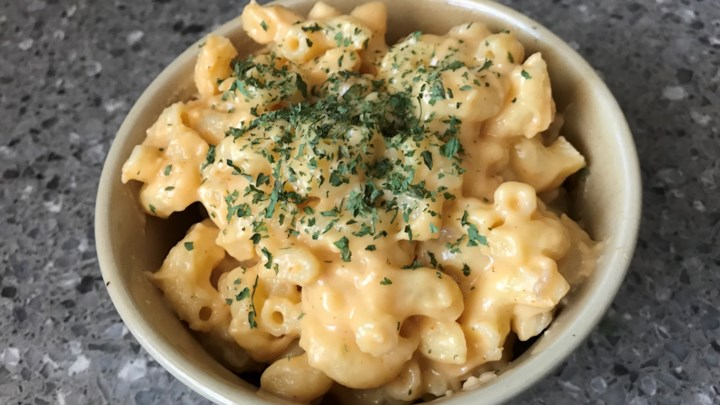

How to Make mac and chesee

Ingridients
- macaroni
- full cream milk
- Mushroom broth
- chedar chesee
- Salt
- Pepper
- sausage or any kind of meat
- corn starch
- black pepper(optional)
- rosemary and basil(optional)
- mozzarela
- oil
Steps
- put water on the pot and turn on the stove.
- And then put salt and oil.
- when it boil put macaroni in to the pot after it'sa cooked properly turn off the stove and drained the macaroni.
- After that, put macaroni in the bowl.
- for the sauce put full cream milk in the pot and turn on the stove
- put your chedar chesee and mozzarela in to the pot and stirr untill it melt.
- after it melt put your Mushroom broth, salt, peper, and black pepper inside mix it until it's combined.
- mix your corn starch with water and put it in to the milk and then you can put your meat.
- After the sauce is done you can put your pasta in to the sauce and mixid.
- after that put your rosemary and basil on top.
- and the finnal steps put your macaroni in the serving plate.